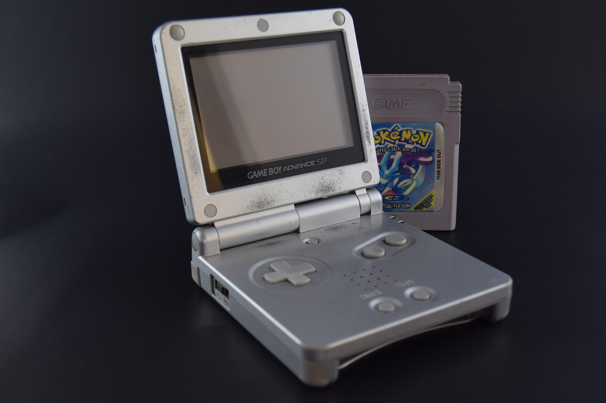
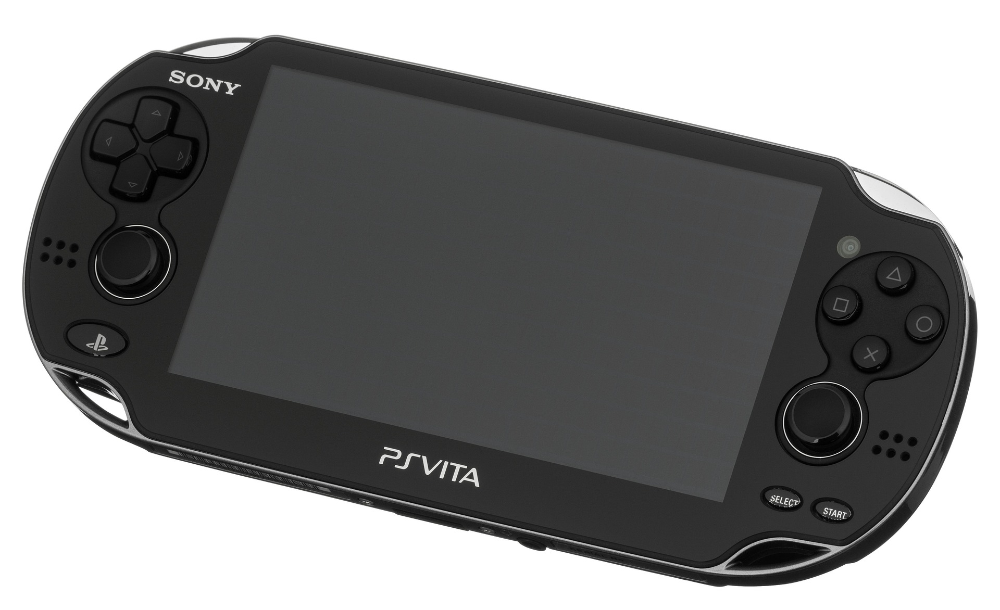
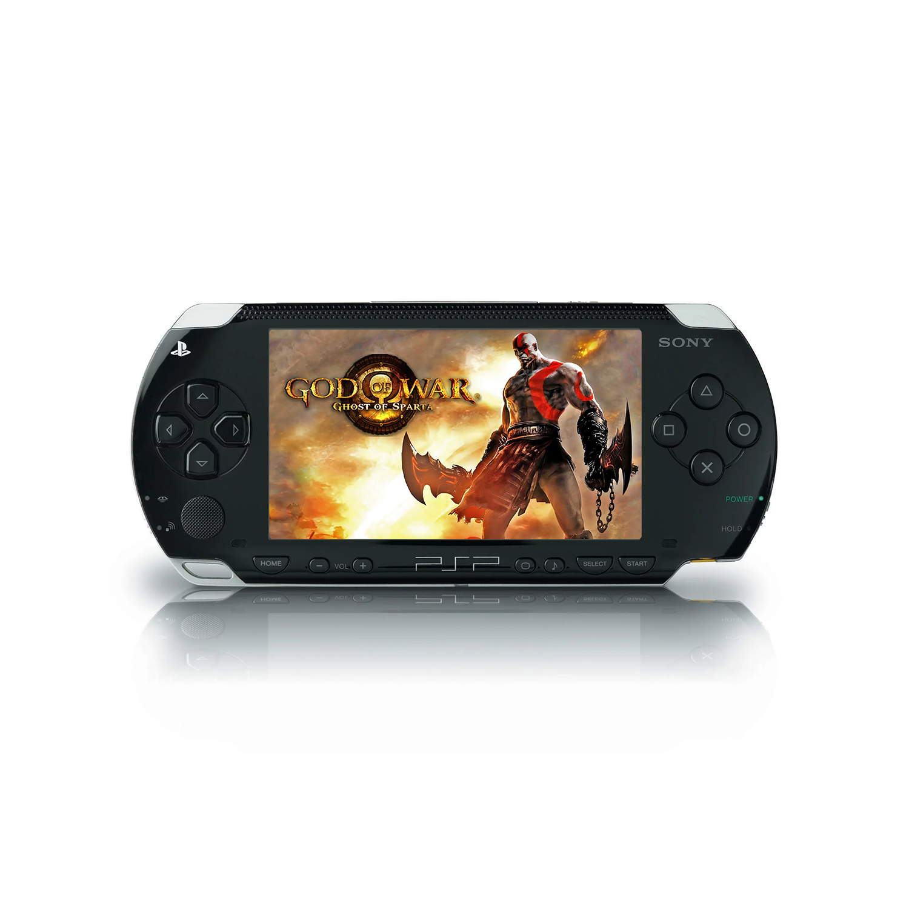

The Big 3 For Consoles:
Despite the NES appearing to be the odd one out based on era, these three consoles
alone were absolute unites in the gaming battlefield! Theres a reason why your older
relatives refer to any gaming console as : "The Nintendo." You might have noticed the exclusion
of the Wii in the "Big Three" tier list and the reasoning for that was simple, the system just simply
didn't have the same level of horsepower compared to the Xbox 360
or PlayStation 3 when it came to hardware. Both were just constantly at each other's throats
in competition, whereas Nintendo was more so viewed as the Baby's First Console.
Game Boy Advance SP

The GBA SP was a handheld that was able to play the entire Game Boy library, and it was also the first handheld to have a rechargeable battery.
PlayStation Vita

The PS Vita was a handheld that was able to play games that were on par with the PlayStation 3, and it also had a built-in camera and touch screen/ back touch pad.
Playstation Portable

The PSP was a handheld that was able to play games that were on par with the PlayStation 2, and it also had a built-in web browser.
The absolute MONSTERS for Handheld Gaming:
The Game Boy Advance SP, PlayStation Portable, and PlayStation Vita were all absolute beasts in their own right.
All three of these handhelds were able to provide gamers with an experience that was on par with their home console counterparts.